Oxidative & Metabolic Dysfunction
Foundation & Amplifier
- Oxidative stress (ROS ↑)
- Mitochondrial dysfunction & metabolic inflexibility
Why A&S Focuses on Stress
Stress is a key influencing factor within the personal exposome—shaping how external exposures are perceived, integrated and translated into biological responses.
Scent, diet, sleep, lifestyle and environmental exposures can influence emotions, metabolism, immunity, skin health and aging through sensory and neural pathways.
By integrating sensory science, exposome research, Bio-Responsive Ingredients, Scented Therapy and Neuro Skincare, A&S explores how the body perceives, regulates and recovers from stress—and translates these insights into meaningful products and services.
Our goal is not to eliminate stress, but to help the body adapt, restore balance and build long-term resilience.
From Adaptive Response to HPA-Axis Dysregulation
The blue curve represents the body’s adaptive capacity and physiological stress response, including HPA-axis activity and mediators such as cortisol.
Normal responses fluctuate and recover. Acute stress drives resistance; prolonged stress weakens compensation, eventually leading to exhaustion and impaired regulation.
Successful Adaptation
Resistance · Attempted Adaptation
Attempted Adaptation
Failed Adaptation
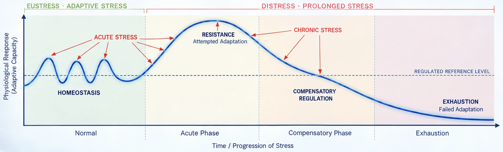
Scroll horizontally to view the full curve.
Acute stress supports adaptation when recovery is complete. Repeated or unresolved stress accumulates allostatic load, progressively weakening regulation and resilience.
Explore the TransitionPsychological · Physical · Social
Acute-to-Chronic Stress Transition
Chronic Stress–Induced Dysregulation Across Multiple Systems
Chronic stress can disrupt several regulatory systems simultaneously. These systems reinforce one another, allowing dysregulation to persist and intensify over time.
Oxidative & metabolic dysfunction is the central driver that amplifies and links all core dysregulatory systems.
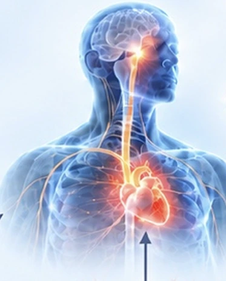
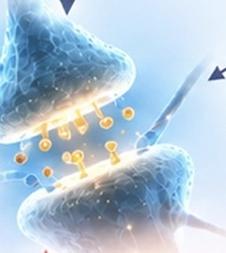
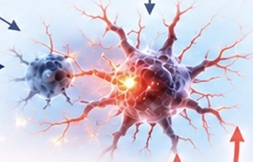
Reciprocal Interactions
Foundation & Amplifier
From Persistent Dysregulation to Broader Health Vulnerability
Persistent stress-related dysregulation can increase vulnerability across both mental and systemic health domains. Shared inflammatory, neuroendocrine, autonomic and metabolic mechanisms connect these outcomes.
Repeated or prolonged stress can amplify vulnerability through accumulating allostatic load and persistent neurobiological change.
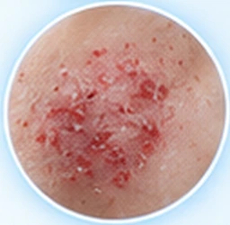
(e.g., eczema, psoriasis, acne)
Moderate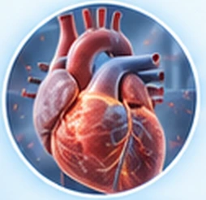
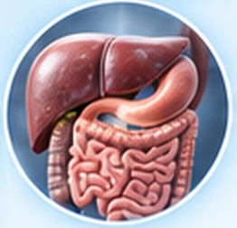
The Extended Pathway from Allostatic Load to Dementia Risk
Chronic stress does not determine neurodegeneration. Risk may increase when persistent dysregulation, allostatic load and neuroinflammatory–metabolic stress converge over time.
Progression is heterogeneous—not everyone follows this pathway.
Persistent stress · Incomplete recovery
HPA / ANS · Neurotransmitters · Neuroinflammation
Oxidative & mitochondrial stress
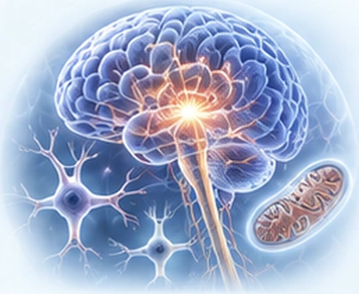
Mental · Systemic · Cognitive
Stress sensitization Greater allostatic load Persistent neurobiological change
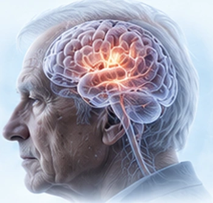
Many factors influence the trajectory—not everyone progresses.
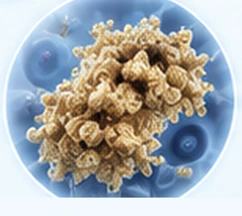
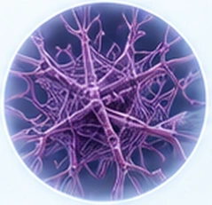
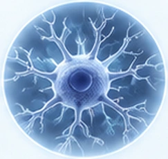
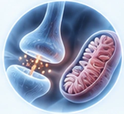
Dementia / Alzheimer’s Disease